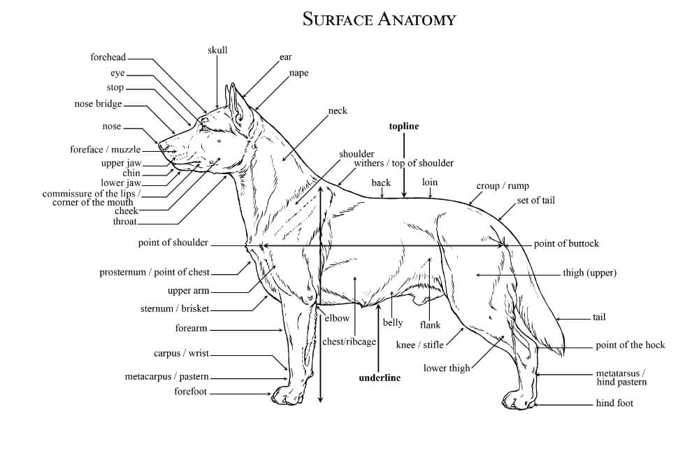

Sarplaninac drawing by Janez Plestenjak, FCI judge in Skofja Loka
Resources
Information for the breed standard of Sarplaninacs was collected from the UKC guidelines for the standard on their website and the FCI under the official FCI-Standard N° 41 (pdf).
The Sarplaninac is not officially recognized by the American Kennel Club (AKC) or the Canadian Kennel Club yet.
Keep in mind
The purpose of these breed standards is to be a guideline for breeders who wish to maintain the quality of their breed and to
improve it; to advance this breed to a state of similarity throughout the world; and to act as a guide of judges.
Head
The head length of a dog of average height is about 9¾ inches from occiput to tip of nose,
but this length will vary in proportion to the size of the dog. In profile, the muzzle is slightly
shorter in length, measured from stop to nose, than the skill, measured from stop to occiput. The stop is slight.
Skull
The skull is slightly domed and broad between the ears, tapering gradually towards the muzzle.
The medan furrow is distinct. The supraorbital ridges are only slightly developed and the occiput is not evident.
Cheek muscles are well developed, but the cheekbones are flat.
Muzzle
The muzzle is broad and deep at the base, tapering slightly toward the nose. The topline of the muzzle
is straight except for the tip, which is unusually developed giving an aquiline appearance in profile. Lips are
moderately thick, tight and dry. The upper lip only slightly overhands the lower lip.
Faults: Insufficiently broad skull; muzzle too long Serious Fault: Muzzle too snipey.
Disqualification: Total lack of pigment in lips.
Teeth
The Sarplaninac has a complete set of evenly spaced, white teeth meeting in a scissors bite.
Serious Fault: Level bite.
Disqualification: Undershot or overshot bite; missing teeth.
Nose
The nose is broad and black, projecting somewhat over the mouth and giving the impression that the upper jaw
is longer than the lower. Viewed in profile, a line drawn from the tip of the nose to the chin slants downward and backward.
Disqualification: Total lack of pigment in nose.
Eyes
Eyes are almond-shaped and of moderate size. Eye color ranges from dark brown to chestnut. The expression is piercing. Eye rims are black.
Disqualification: Total lack of pigment in eye rims.
Ears
The ears are drop and V-shaped, hanging close to the cheeks, and covered with short, dense hair. When pulled forward, the tip of the ear
should reach the inner corner of the eye. The ears are set on, or just below, a line running fom the tip of the nose through the inner
corner of the eye.
Serious Faults: Ear set too high; ears not hanging close to cheeks.
Neck
The neck is of medium length, but appears shorter than it is because of the thickness of the coat.
The neck is broad and well muscled, and blends smoothly into the head and shoulders. The skin is tight with no dewlap.
The crest of the neck is straight or slightly arched. The head is carried slightly above the line of the neck.
Forequarters
The shoulder blades are long and wide and laf back at an angle of about 65° from the horizontal.
The upper arm is muscular and lies at an angle of about 55° from the horizontal. The elbows are close to the body.
Forelegs
The forelegs are straight, strong, and sturdy in bone, with strong, broad, slightly sloping pasterns. The length of the
foreleg is slightly greater than one-half the distance from the withers to the elbow.
Body
A properly proportioned male Sarplaninac is 8-10% longer (measured from prosternum to the point of the
buttocks) than tall (measured from the withers to the ground), with a little more length of body allowed in bitches
(10-12% longer). The withers are moderately developed and broad. Whether the dog is standing or moving, the line of the
back is strong and level from the withers to the slightly sloping croup. A slightly sloping topline is acceptable,
but not preferred. The loin is well back and are well sprung out from the spine, forming a broad, strong back, then curving
down and inward to form a deep body. The brisket extends to the elbow. Viewed from the front, the chest between the
forelegs is broad and muscular.
Hindquarters
The hindquarters are muscular, wide, and set somewhat wider apart than the forelegs. The rear angulations is
slightly more open than the angulation of the forequarters, with the angle of the stifle about 125° and the
angle of the hock about 130°. When the dog is standing, the broad rear pasterns are perpendicular to the ground and,
viewed from the rear, parallel to one another.
Feet
The feet are firm and oval-shaped, with well-arched and close toes. The nails are strong and dark in color.
The pads are tough, elastic, and darkly pigmented. Front dewclaws may be removed; rear dewclaws should be removed.
Tail
The tail is a natural extension of the topline. It is thick and muscular at the base and tapers to the tip in a saber shape. A tail
of the correct length extends at the least to the hock. When the dog is relaxed, the tail hangs down naturally. When the
dog is moving or alert, the tail is raised level with, or slightly above, the back. When very agitated, the tail may be raised of the back.
Disqualification: Bobtail (including dogs born with a stump tail or no tail).
Skin & Coat
The Sarplaninac is a double-coated breed with a long, straight, somewhat rough-textured outer coat, and a shorter, much finer and thicker undercoat.
The coat on the head, ears, and front side of the legs is short. The hair on the neck, the buttocks, the tail, and the back side of the legs is longer.
This variation in the coat length results in a ruff at the neck, a distinct frill at the nape of the neck, breeches on the buttocks and backs of the legs,
and a plume on the tail. At the withers, the outer coat should be 4-5 inches long and no shorter than 2¾ inches. Skin is moderately thick,
elastic and tight all over the body.
Minor Faults: Coat slightly shorter than desired, as long as the feathering is correct.
Disqualification: Coat on the withers is shorter than 2¾ inches.
Color
All solid colors are acceptable from white to very dark brown that is nearly black. The most common color is an iron gray. The color may vary from a
darker shade on the top of the head, neck, and body, to a lighter shade towards the extremities, but the change must be very gradual so as not to give the impression
of spots or patches of color. The hairs of the outer coat may be tipped in black, resulting in a sable color pattern. Tiny white markings on the chest and toes
are allowed, but not desireable.
Minor Fault: White markings on the chest and feet.
Disqualification: White spots or patches other than tiny white markings on chest or toes; albinism.
Height & Weight
Height at maturity, measured at the withers is 24 inches or over for males & 22½ inches or over for females.
Mature males in good working condition weigh between 77 and 99 lbs.
Mature females in good working condition weigh between 66 and 88 lbs.
Gait
At the trot, the Sarplaninac moved freely with strides of moderate length. The back and loin are elastic and springy. As speed increases, however, the width
between the legs decreases and the tendency to single track increases until the dog breaks into a heavy, lumbering gallop. When alert, the Sarplaninac
moves with determination and purpose towards the object of interest, often with the head slightly lowered and the tail raised above the back.
Eliminating Factors
(An Eliminating Fault is a Fault serious enough that is eliminates the dog from obtaining any awards in a conformation event.)
Mature male under 22 inches; mature female under 21 inches.
Disqualifications
(A dog with a Disqualification must not be considered for placement in a conformation event, and must be reported to the UKC.)
Unilateral or bilateral cryptorchid.
Extreme viciousness or shyness.
Total lack of pigment in lips, nose, or eyerims.
Undershot or overshot bite.
Missing teeth.
Bobtail (including dogs born with only a stump or no tail at all).
Coat on the withers shorter than 2¾ inches.
White spots or patches other than tiny white markings on chest or toes.
Brindle.
Albinism.

Surface Anatomy of a Dog From the FCI Standard